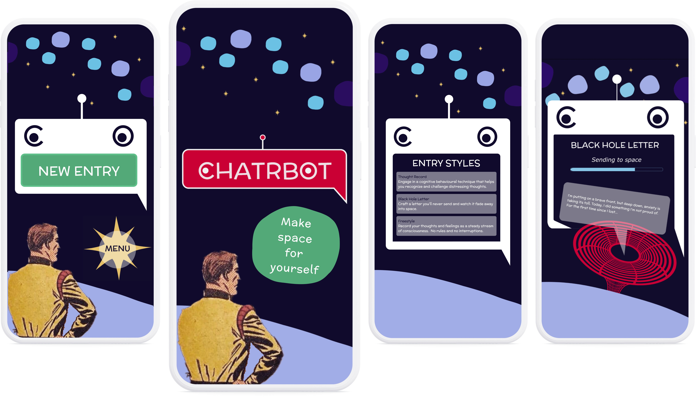
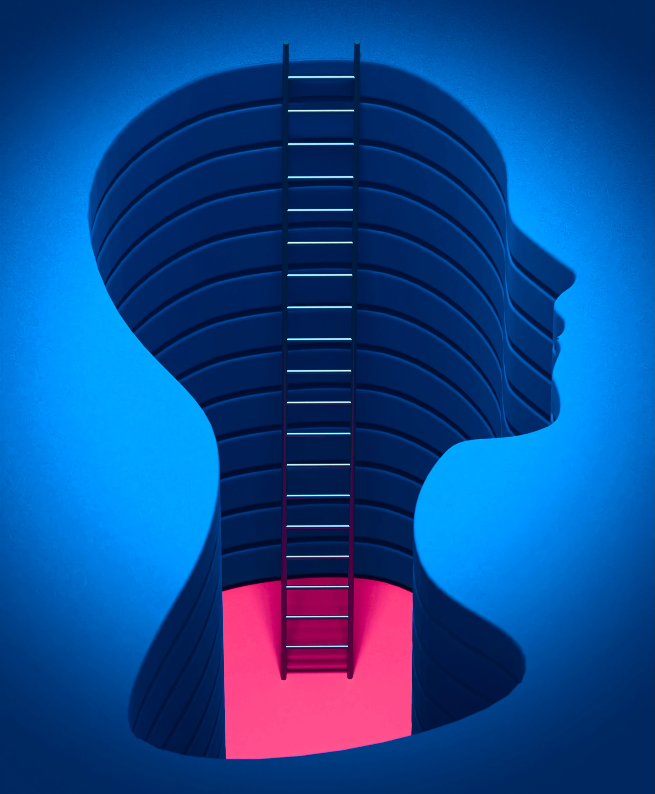
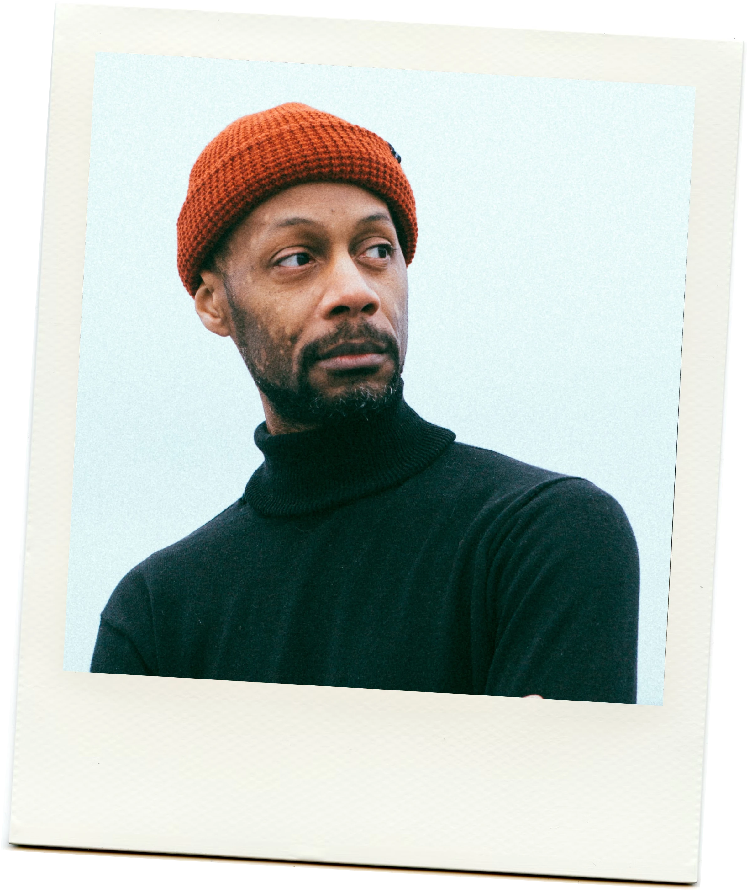
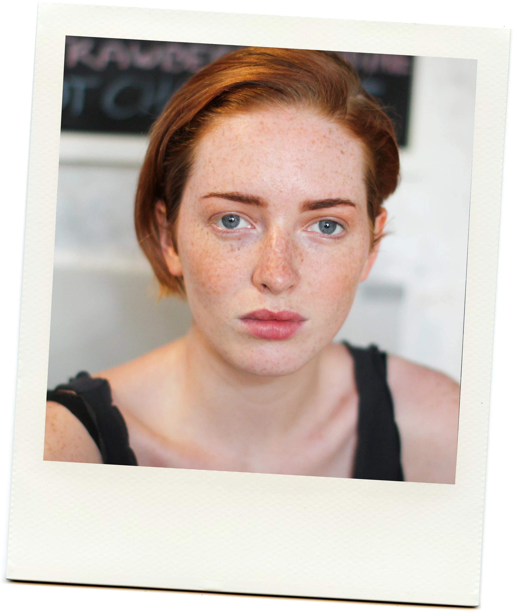
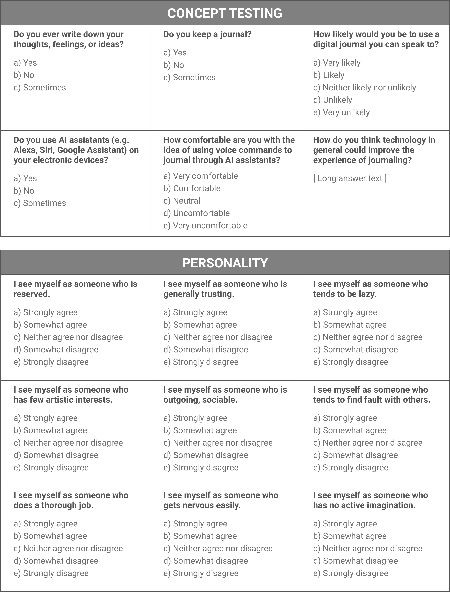
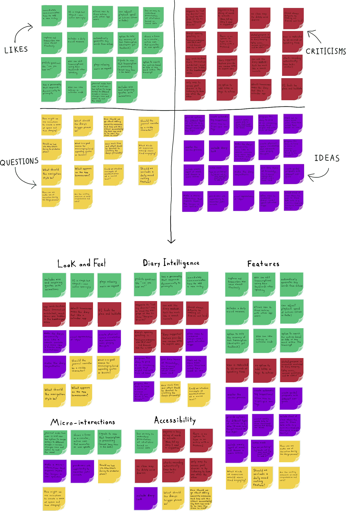
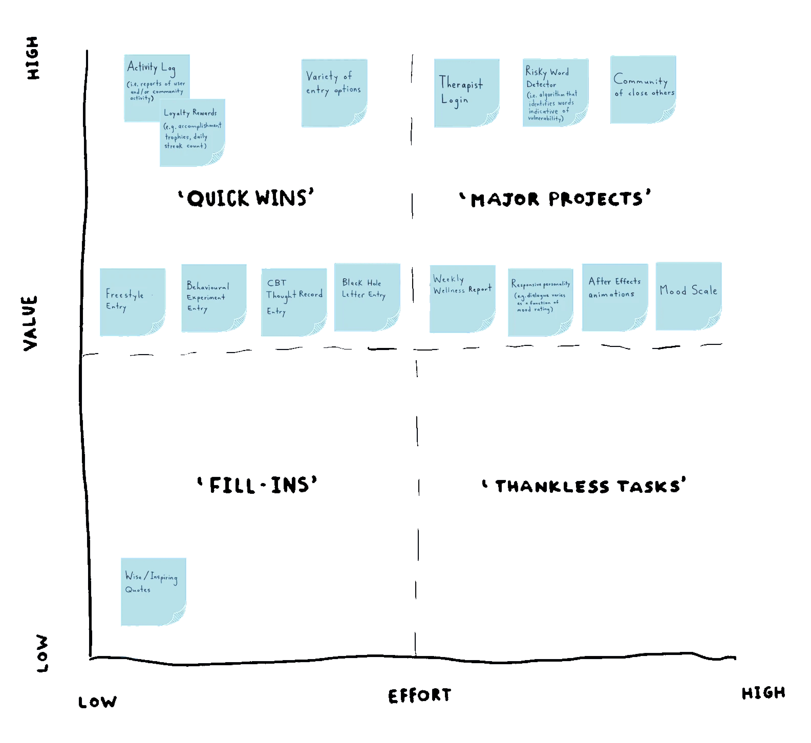
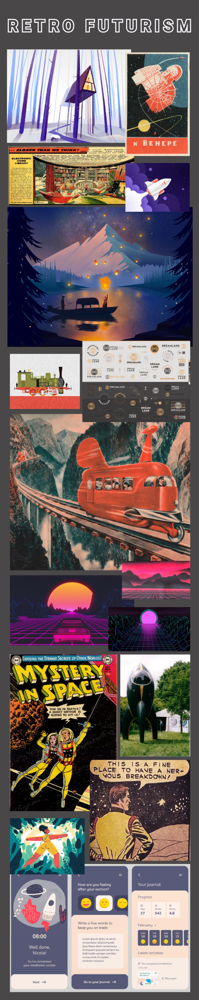
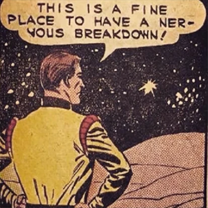

CHATRBOT
Make space for yourself
A spoken word journal creating a safe space for anxious thinkers

THE PROBLEM
Our inner critics run rampant
People often accept thoughts about themselves at face value without considering whether they are accurate or helpful.
Left unexamined, distorted self-perceptions can erode confidence and hinder personal growth over time.

DESIGNING A SOLUTION
Examining the self
I wanted to create something that allowed people to examine, dissect, and interpret thoughts about themselves.
The most obvious way people already do this is through journaling, so I started there, interviewing people who kept written journals of their emotional experiences to understand the habit.
A few themes emerged:
- Capturing thoughts in real time means people can revisit them later from a clearer headspace
- Free expression without fear of judgment makes room for honesty
- Patterns in honest reflection reveal how people see the world and themselves
"You can capture your mood in time… you can communicate something from a different time in a different headspace."

"When were talking, we’re trying to follow rules… but when we’re talking in a journal, it’s free form and you can see patterns in language."
"It’s about perspective... being able to see what I thought about the past... what I thought was important and what has changed since then."

Connecting with experts
User interviews helped me understand how people reflected on their own, but I wanted to build something that prompted people to deepen this process.
To learn about strategies for increasing self awareness, I spoke with two mental health therapists who suggested:
- Naming emotions and their origins to turn feelings people are stuck inside into ones they can step back and examine
- Adding structure to reflection because gentle, well-placed prompts encourage balanced thinking and perspective-taking
Testing the concept
So far, I knew people wanted to capture honest thoughts before they slipped away, and they reflected best with some structure.
A spoken word journal with gentle prompts could presumably address these needs; speaking is faster and less filtered than writing, and prompts could guide the reflection itself.
I paired a concept testing survey with a personality test and found 83% of respondents were likely to use a spoken word journal, and those most interested were high in neuroticism (a tendency to experience anxiety, fear, and emotional instability).

Analyzing competitors
With interest confirmed, I looked at what was already out there, evaluating five existing spoken word journal apps.
The majority of these apps had no structured prompts to guide journal users, posing a risk to productive self-reflection.
They also tended to feel cold rather than comforting, a real gap for anxious users seeking a safe outlet.

Prioritizing ideas
I started brainstorming features and mapped them by value and effort to decide what was worth building.
To cater to a diverse set of moods, I included multiple entry styles—just enough variety to meet peoples' feelings without burying them in options.

Crafting an atmosphere
Because those most interested in the concept tended to be high in neuroticism, I wanted to provide an environment that felt like a safe escape—a place away from the world to comfortably divulge one's innermost thoughts.
I also wanted to emphasisize the relativity of emotions to time.
Eventually, I landed on retrofuturism, a design movement exploring tension between the past and future. This style combines nostalgic aesthetics with futuristic concepts, evoking a sense of balance between the known and the unknown.

THE FINAL PRODUCT
A frequency for every feeling
The final prototype offers four distinct entry styles, each designed to meet users where they are.
Thought Record
Engage in a cognitive behavioural technique that helps you recognize and challenge distressing thoughts.
Five Senses
Take a mindful journey through space and time to reflect on your sensory experiences.
Black Hole Letter
Craft a letter you’ll never send and watch it fade into space. (Entry not archived)
Freestyle
Record your thoughts and feelings as a steady stream of consciousness. No rules and no interruptions.
REFLECTION
A journal that makes space
Traditional journaling—a blank page and pen—requires the presence of mind to know where to start; for anxious people, this alone can feel like too much.
Chatrbot removes this friction. It replaces a blank page with a gentle starting point, and a pen with a voice that allows faster and less filtered reflection.
Ultimately, it makes a safe space for anxious people to tease their thoughts apart and put them back together.
